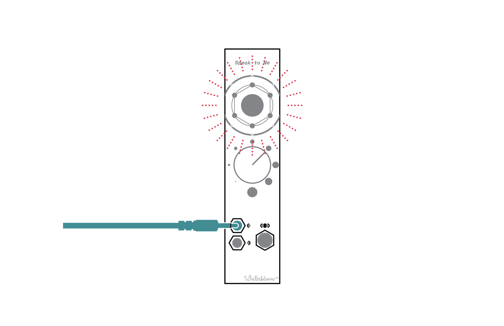
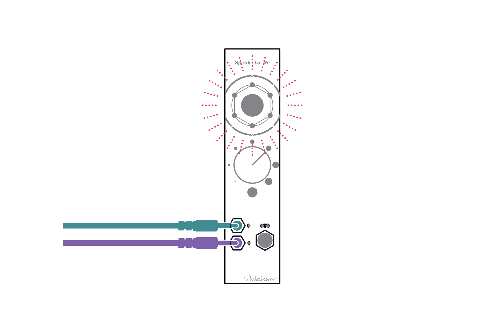
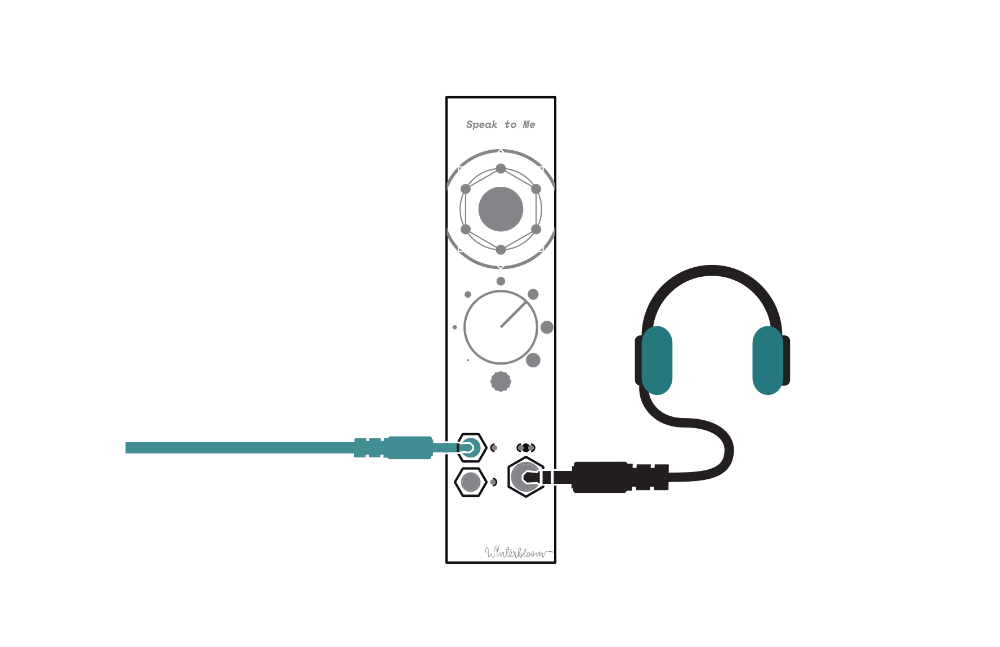
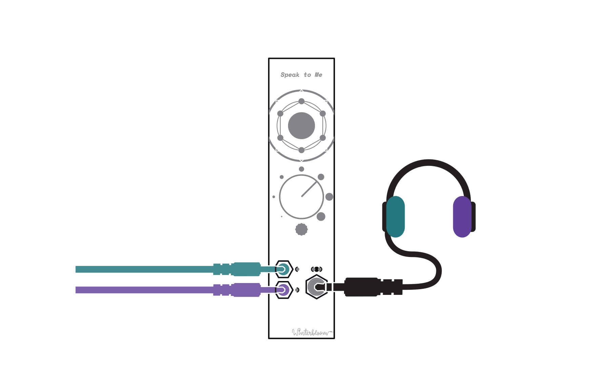
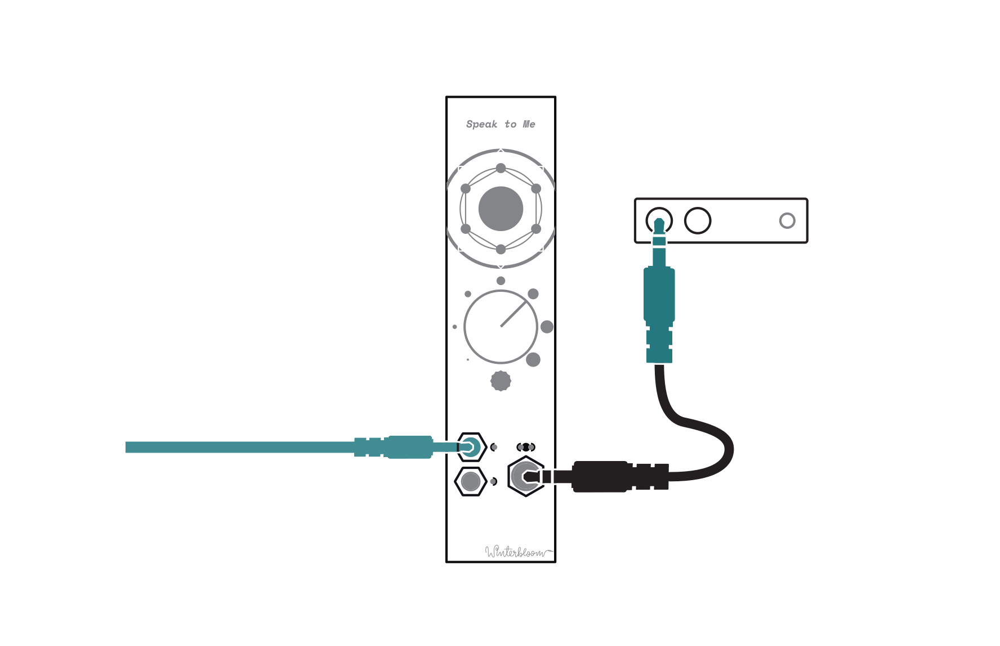
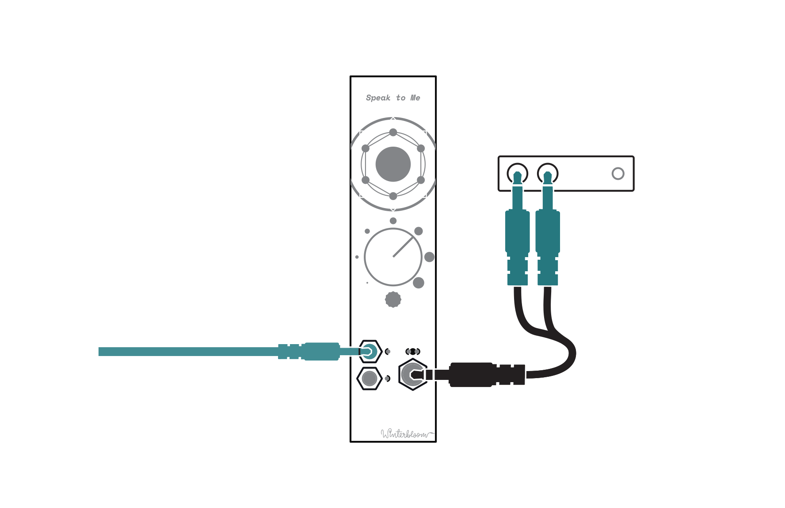
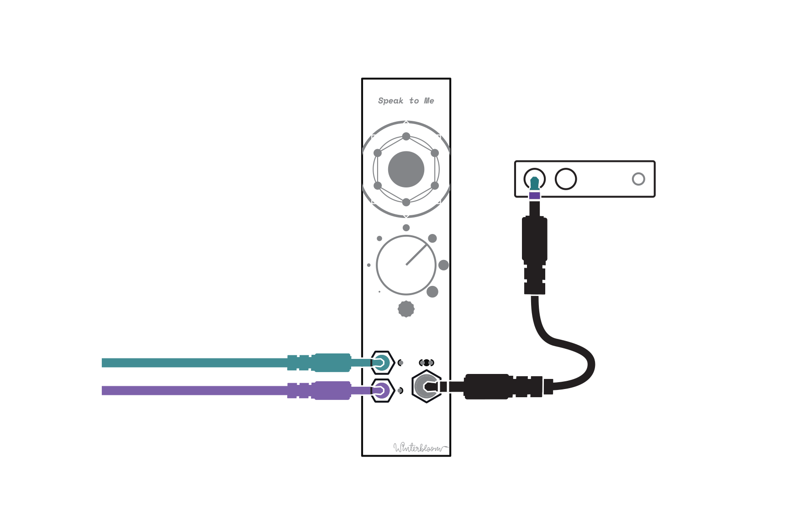
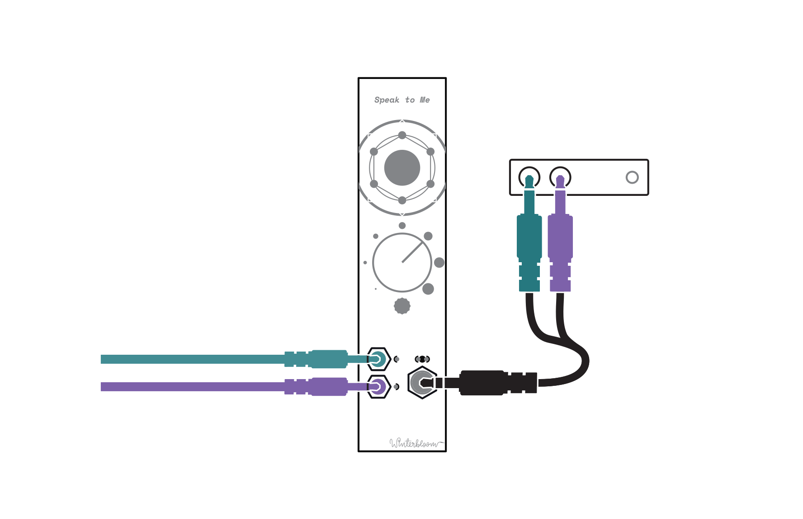
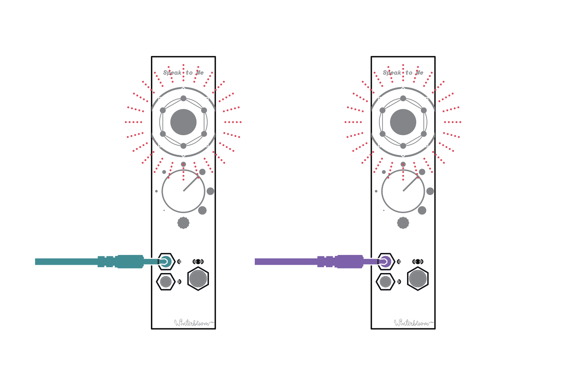

Speak to Me User Guide#
Speak to Me is rock solid high-quality headphone amplifier with a delightfully lo-fi speaker.
Specifications#
- Available assembled or as a kit
6 HP+12v @ 15 to 150mA,-12v @ 5mA30mmdeep- Stereo input, with right channel normalled to left
- Stereo 1/4" TRS output suitable for headphones and line level.
- Mono,
1.4Wspeaker - ModularGrid page
Getting support and help#
We want you to have a wonderful experience with your module. If you need help or run into problems, please reach out to us. Email is the best way for product issues, whereas Discord and GitHub are great for getting advice and help on how to customize your module.
Installing the module#
To install this into your Eurorack setup, connect a Eurorack power cable from your power supply to the back of the module. Note that even though there's a keyed power connector on the module, double check that the red stripe is on the side labeled red stripe! Once you've connected the power cable, secure your module to your rack rails using screws.
Making connections#
There's a few different ways that you can patch Speak to Me depending on your setup and needs. The following sections walk through the various ways of using Speak to Me.
Mono in with speaker#

The most basic setup. Connect Eurorack-level audio to the top 3.5mm jack and Speak to Me will play the audio through its speaker
This is great for small setups but also super useful in larger racks if you want to monitor a small part of your patch.
Stereo in with speaker#

Connect the Eurorack-level audio signal for the left channel to the top 3.5mm jack and the signal for the right channel to the bottom 3.5mm jack. Speak to Me will downmix the two signals to mono and play the audio through the speaker.
Like the mono setup, this is great for small setups and monitoring. It has the added benefit of being able to monitor two (possibly unrelated) signals at the same time.
Mono in with headphones#

Connect Eurorack-level audio to the top 3.5mm jack and connect a pair of stereo headphones to the larger 1/4" TRS jack. Speak to Me will play the audio through both the left and right headphone - no need to patch the same signal twice. The speaker is automatically turned off when headphones are connected.
Just like with the previous setup, this is wonderful for small setups and monitoring larger racks. One major benefit to this setup is that the module consumes much less power when the speaker is off, so this is ideal for portable and battery-powered setups.
Stereo in with headphones#

Connect the Eurorack-level audio signal for the left channel to the top 3.5mm jack and the signal for the right channel to the bottom 3.5mm jack. Connect a pair of stereo headphones to the larger 1/4" TRS jack. Speak to Me will play the audio through the headphones. The speaker is automatically turned off when headphones are connected.
Like the mono setup, this benefits from lower power consumption which is ideal for portable and battery-powered setups. It can also be used to monitor two different signals (one in each ear) if needed.
Mono in with line out#
First, connect the Eurorack-level audio signal to the top 3.5mm jack.
Next, connect Speak to Me's 1/4" stereo output to your mixer, interface, or other line-level equipment. The specific cable needed to do this depends on your equipment's input options.
If your equipment has a stereo line input, you can use a 1/4" TRS stereo cable like this one. Even though the interconnect is a stereo cable, Speak to Me will send the same signal to both channels:

If your equipment has mono line, instrument, or microphone inputs such as those commonly found on recording interfaces, you can use a 1/4" TRS to 1/4" TS to adapter like this one:

Mono cables
We highly recommend using the TRS to TR adapter over using a typical mono 1/4" TR cable. Using a mono cable directly might, in extreme cases, cause some audio issues such as "hiccups". This is because using a mono cable shorts the signal on the ring connector to ground and causes the module to draw more power. Speak to Me is designed to operate under these conditions, but we wanted to let you know just in case.
Alternatively, you can use a 1/4" TRS Y-cable like this one as an adapter. You can connect either end of the Y cable to your equipment.

This setup is great for getting audio out of your Eurorack and into a recording, mixer, or line-level effects units.
Stereo in with line out#
First, connect the Eurorack-level audio signal inputs: connect the signal for the left channel to the top 3.5mm jack and the signal for the right channel to the bottom 3.5mm jack.
Next, connect Speak to Me's 1/4" stereo output to your mixer, interface, or other line-level equipment. The specific cable needed to do this depends on your equipment's input options.
If your equipment has a stereo line input, you can use a 1/4" TRS stereo cable like this one:

However, if your equipment has mono line, instrument, or microphone inputs such as those commonly found on recording interfaces, you'll need to use a 1/4" TRS Y-cable like this one to split the left and right channels. You'll then connect each channel into a separate input on your equipment:

Like the mono setup, this is great for getting audio out of your Eurorack and into a recording, mixer, or line-level effects units. It's especially useful if you have modules that produce stereo effects or if you want to record two independent patches at the same time.
Stereo speakers#

If you happen to have two Speak to Me modules, you can set up one module on each side of your rack and use them as a pair of stereo speakers. Connect your right channel signal to the top 3.5mm input on the right-side Speak to Me and connect the left channel signal to the top 3.5mm input on the left side.
Recommended accessories#
Like most audio equipment, connecting Speak to Me to external equipment can require using adapters. We recommend HOSA cables and adapters. You can purchase these online or through a local music equipment retailer.
- 3.5mm TRS to 1/4" TRS adapter for connecting headphones that have the smaller 3.5mm plug to Speak to Me's 1/4" jack.
- 1/4" TRS cable for connecting Speak to Me's line output to equipment that accepts stereo TRS inputs.
- 1/4" stereo breakout for splitting Speak to Me's stereo output into separate left and right channel signals.
- 1/4" TS to 1/4" TRS adapter for connecting a 1/4" mono TS cable to Speak to Me's stereo output.
Open source hardware & software#
Speak to Me is completely open source and hacking is encouraged.
The hardware design is available under the permissive CERN-OHL-P v2 and is designed using KiCAD which is free and open-source. You can open the hardware files using KiCAD or you can check out a PDF of the schematic.
Speak to Me is certified open source hardware
Warranty, disclaimers, and limits#
Modules purchased from Winterbloom have a warranty of six months from the date of purchase. This warranty covers any manufacturing defects in the module. It does not cover damage from due to incorrect handling, storage, or power, overvoltage events, or modifications.
Please contact us if you are experiencing issues with your module. Modules returned under warranty will either be refunded, replaced, or repaired at our discretion. You will be responsible for the cost of returning the module to Winterbloom.
Because Eurorack has a vast number of possible combinations of power supplies, modules, cases, and accessories, it is impossible for us to guarantee compatibility with every possible configuration. We make a reasonable effort to test modules with several power supplies, cases, and other modules.
We encourage tinkering, however, we will not refund, repair, or replace any products that have been modified.
We have stress tested Speak to Me under the following conditions. These are provided for reference only; we do not guarantee that that the module will function under these conditions.
- Continuous run time: at least 48 hours
- Overvoltage from power supply: at least
±18 volts - Reverse voltage from power supply: at least
±18 volts - Undervoltage from power supply: as low as
±8 volts - Over and under voltage on inputs: at least
±12 volts - Outputs shorted to ground: at least 60 minutes
Acknowledgments and thanks#
Speak to Me would not be possible without the support of Winterbloom's incredible community, the Trans Synth Discord, and Noise Engineering.